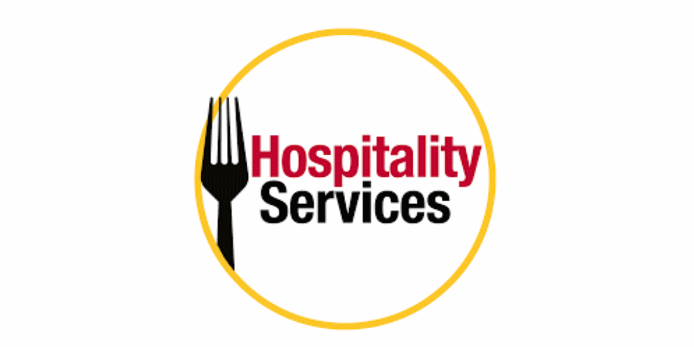
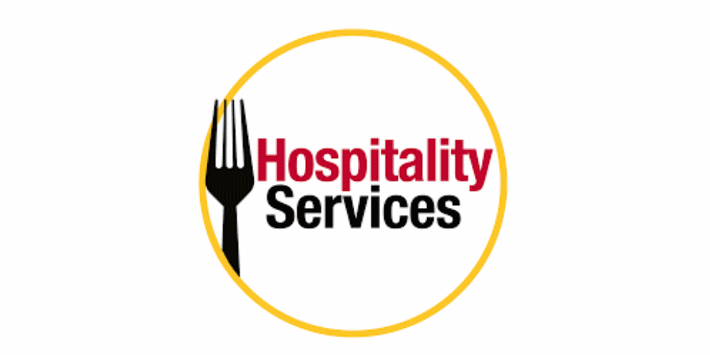
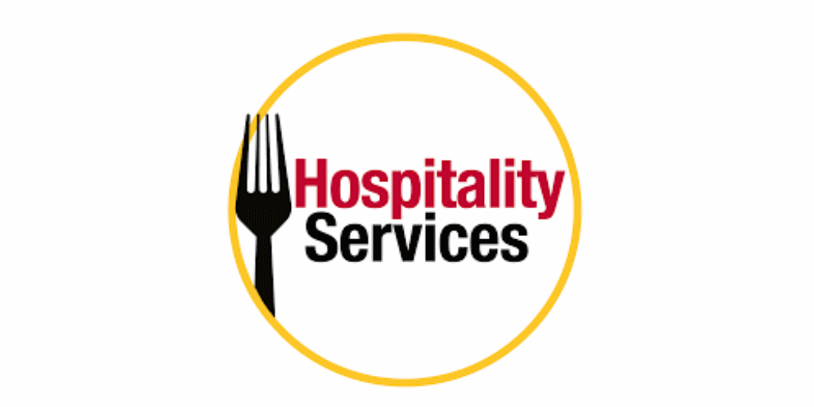

Abstract
The purpose of this website is to inform the reader about my co-op work term(s), specifically the details of the work, what I learned, and how I’ve improved as a developer.
Winter 2025
Info
My Winter 2025 work term was in Guelph, Ontario, working for Hospitality Services IT at the University of Guelph.
 

Goals
As part of the University of Guelph co-op program I was required to create some goals at the start of the work term I’d hope to achieve by the end. Here’s what they were and how this work term helped me with them:
- Improve my ability to explain completed tasks, limitations in ongoing projects, and better understand user requests
I can definitely say I've achieved this goal. Over this work term I've worked closely with various users to design and develop solutions that are intuitive and function well. One thing I was concerned about was going from design meetings to actually working on each project itself. I found that it was easiest for me to listen to their requests and then jot down a timeline of what would need to be developed which helped me keep track of the scope of the project. While doing this I'd also write notes on potential roadblocks that may occur at each stage of the development process. Then instead of bringing up the specific issue I'd ask a design-oriented question along the lines of "how should X function?" which would give me an approach to solving/getting around the problem without either of us getting too bogged down by specifics. This made it a lot easier for me to complete projects efficiently as I already had most of the answers/a detailed list of development stages going in to the project.
- Improve on some skills I'm less knowledgeable with like SQL
During this work term I was able to create multiple projects from scratch instead of just developing on top of existing work. This caters to how I learn far better than patching existing software. Because of this my knowledge of SQL, .NET (specifically the MVC pattern), and C# have greatly improved. Having the opportunity to be exposed to all of these tools in an environment where I could continually fail until I understood how to do things properly (this was especially so with the MVC pattern) was a great learning experience. With the self directed workflow and end goal to work towards I effectively applied my existing knowledge on top of skills I developed during this work term to efficiently complete projects with ample time to maintain them afterwards and apply feedback from real users in a live environment.
- Improve on existing skills/develop new skills
So far this goal is going very well. I've completed all my tasks so far efficiently and with a high degree of quality often leaving me downtime while waiting on others which I've spent improving other skills and researching ways to improve the project further. For example, I've greatly improved my knowledge of React. I've stayed up to date on some newer libraries/tools in development that I may want to pursue for future projects. I've also managed to keep a fairly consistent schedule outside of work, leaving time to have a better work life balance instead of just getting home and working on personal projects until I'm burnt out. I think this goal will be a success if I keep it up during the next work term as well.
I definitely achieved the goals I set when I started this placement. I was well prepared for this job and there wasn't much challenging work to do. I was often left with no tasks as I completed everything very quickly. I took advantage of this downtime to learn non-work related skills/tools and prepare myself for the Summer job search
Job Description
I worked independently to develop process automation scripts with Python and SQL as well as fix old .NET sites/add new functionality to them.
It was shocking how much manual data entry the University relies on. I was a bit of a Python demon and sped up a lot of Campus Card Office's workflows. I also automated the meal plan account balance transfer process as it previously relied on manual e-mail responses.
Main focus was Python, SQL, .NET, JS. I also set up a database with SSMS (gross) and made a really backwards solution to bypass our apps server blocking external connections in order to communicate with ScreenCloud. Don't worry I also think the infrastructure should be updated.
Conclusion
I was definitely overqualified for this placement but it wasn't a bad job, I was pretty bored though.
The purpose of this website is to inform the reader about my co-op work term(s), specifically the details of the work, what I learned, and how I’ve improved as a developer.
My Winter 2025 work term was in Guelph, Ontario, working for Hospitality Services IT at the University of Guelph.

As part of the University of Guelph co-op program I was required to create some goals at the start of the work term I’d hope to achieve by the end. Here’s what they were and how this work term helped me with them:
- Improve my ability to explain completed tasks, limitations in ongoing projects, and better understand user requests
- Improve on some skills I'm less knowledgeable with like SQL
- Improve on existing skills/develop new skills
I can definitely say I've achieved this goal. Over this work term I've worked closely with various users to design and develop solutions that are intuitive and function well. One thing I was concerned about was going from design meetings to actually working on each project itself. I found that it was easiest for me to listen to their requests and then jot down a timeline of what would need to be developed which helped me keep track of the scope of the project. While doing this I'd also write notes on potential roadblocks that may occur at each stage of the development process. Then instead of bringing up the specific issue I'd ask a design-oriented question along the lines of "how should X function?" which would give me an approach to solving/getting around the problem without either of us getting too bogged down by specifics. This made it a lot easier for me to complete projects efficiently as I already had most of the answers/a detailed list of development stages going in to the project.
During this work term I was able to create multiple projects from scratch instead of just developing on top of existing work. This caters to how I learn far better than patching existing software. Because of this my knowledge of SQL, .NET (specifically the MVC pattern), and C# have greatly improved. Having the opportunity to be exposed to all of these tools in an environment where I could continually fail until I understood how to do things properly (this was especially so with the MVC pattern) was a great learning experience. With the self directed workflow and end goal to work towards I effectively applied my existing knowledge on top of skills I developed during this work term to efficiently complete projects with ample time to maintain them afterwards and apply feedback from real users in a live environment.
So far this goal is going very well. I've completed all my tasks so far efficiently and with a high degree of quality often leaving me downtime while waiting on others which I've spent improving other skills and researching ways to improve the project further. For example, I've greatly improved my knowledge of React. I've stayed up to date on some newer libraries/tools in development that I may want to pursue for future projects. I've also managed to keep a fairly consistent schedule outside of work, leaving time to have a better work life balance instead of just getting home and working on personal projects until I'm burnt out. I think this goal will be a success if I keep it up during the next work term as well.
I definitely achieved the goals I set when I started this placement. I was well prepared for this job and there wasn't much challenging work to do. I was often left with no tasks as I completed everything very quickly. I took advantage of this downtime to learn non-work related skills/tools and prepare myself for the Summer job search
I worked independently to develop process automation scripts with Python and SQL as well as fix old .NET sites/add new functionality to them.
It was shocking how much manual data entry the University relies on. I was a bit of a Python demon and sped up a lot of Campus Card Office's workflows. I also automated the meal plan account balance transfer process as it previously relied on manual e-mail responses.
Main focus was Python, SQL, .NET, JS. I also set up a database with SSMS (gross) and made a really backwards solution to bypass our apps server blocking external connections in order to communicate with ScreenCloud. Don't worry I also think the infrastructure should be updated.
I was definitely overqualified for this placement but it wasn't a bad job, I was pretty bored though.